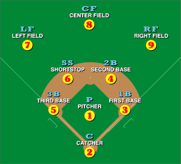

Controlling this Graphics Object:
-
Animation will begin in a paused state upon loading, so
first you should press ALT+a to play or pause animation.
-
Clicking and dragging moves the first-person camera.
-
Press b to follow the ball. To view the perspective of a particular
position on the field, press the number corresponding to the
baseball position number as indicated in the diagram at the bottom.
For example, to view the perspective of the first baseman, press 3.
-
Press t to un-hide the heads-up-display text.
-
Press up and down to cycle through a live feed of important strings
and values, including the frame rate, of the program.
-
Have fun.
